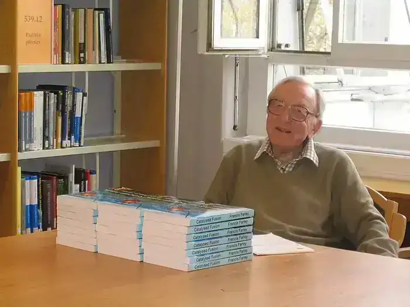

The measurement
The muon's magnetic moment is predicted by the Standard Model to extraordinary precision, and measured to comparable precision in a storage-ring experiment at Brookhaven and then Fermilab. The quantity is expressed as g−2, and the experiment measures the tiny difference from the Dirac value of 2.
Maps, diagrams and images


In 2021 Fermilab confirmed the earlier Brookhaven result, with a combined discrepancy of about 4.2 sigma against the then-accepted theoretical prediction. That is close to the conventional threshold for discovery, and it was reported as such.
The theory problem
The prediction has a component that is hard to calculate: the hadronic vacuum polarisation, the contribution of quark–antiquark pairs. It has traditionally been computed from measured electron–positron collision data.
In 2020 the BMW collaboration computed it from lattice QCD instead, and got a value that brought the prediction into agreement with the measurement — removing the anomaly. Since then, further lattice calculations and reanalyses of the e+e− data have kept the tension alive without resolving it, and the two methods still disagree with each other at a level that matters.
It is not a case of experiment versus theory. It is theory versus theory: two legitimate ways of computing the same quantity give answers that differ by more than their error bars.
4 sigma is not automatic discovery. In a field where many quantities are measured, a 4-sigma discrepancy in one of them is suggestive, not decisive — and here the theory side moved by more than the experiment.
The 2025 measurement sharpened the experimental value further. The anomaly's status now hinges on which calculation the community converges on, not on new data from the ring.
The archive keeps the label at live debate, and notes that the most likely resolution is an underestimated theoretical uncertainty rather than new particles — though that is not settled.
Why it is in the archive
Because it is the best example of a 'crack in the Standard Model' that turned out to be a crack in the calculation, and because the episode is usually reported only at its most exciting moment.
Related: supersymmetry, magnetic monopoles.
Sources for this page
- Wikipedia, “Muon g-2” — experiment, theory, current statusen.wikipedia.org
- Abi et al. (2021), Physical Review Letters 126, 141801 — Fermilab measurementdoi.org
- Borsanyi et al. (2021), Nature — lattice QCD hadronic contributiondoi.org
- Fermilab, Muon g−2 experimentmuon-g-2.fnal.gov
Open resources on this topic
- PapersOpen-access articles: DOAJ · PubMed Central · Internet Archive Scholar
- BooksPublic-domain and borrowable copies: Open Library · Project Gutenberg · Google Books · Internet Archive
Cite this page
Momin, S. (2026). The Muon's Wobble. The Larger World Archive. https://drsamonline.github.io/LARGE_GLOBE/muon-g2.htmlMomin, Sohil. “The Muon's Wobble.” The Larger World Archive, 2026, https://drsamonline.github.io/LARGE_GLOBE/muon-g2.html.Momin, Sohil. “The Muon's Wobble.” The Larger World Archive, 2026. https://drsamonline.github.io/LARGE_GLOBE/muon-g2.html.@misc{the2026muon,
author = {Momin, Sohil},
title = {The Muon's Wobble},
year = {2026},
howpublished = {The Larger World Archive},
url = {https://drsamonline.github.io/LARGE_GLOBE/muon-g2.html},
note = {Last reviewed 20 November 2026}
}Last reviewed 20 November 2026 · Corrections policy · this page is not peer reviewed